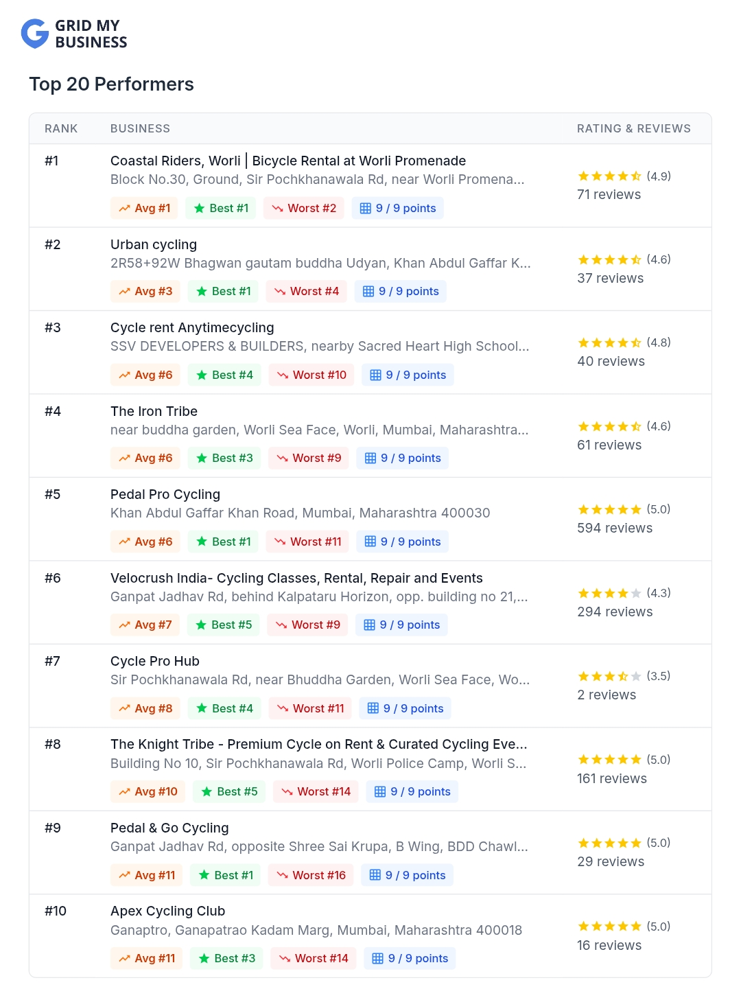

GBP Creation
Created and established the Google Business Profile from scratch.
A Google Business Profile created from scratch and built with a strong local search foundation to help Cycle Pro Hub establish its presence on Google Search and Google Maps.
Cycle Pro Hub needed a Google Business Profile
to establish its presence on Google Search and
Google Maps.
Instead of working with an existing profile,
the project started from scratch. The objective
was to create a complete and credible business
presence, establish the correct local relevance
and help the business begin appearing for
relevant local searches.
The business did not have an established Google Business Profile that customers could discover through Google Search or Maps.
The new profile needed to clearly communicate the business, its location and its services to Google and potential customers.
After creating the profile, the focus was to establish local relevance and achieve ranking movement for relevant searches.
No established Google Business Profile
Improved visibility in local search
The profile was built from the ground up with the essential information required to create a stronger and more discoverable local presence.
Created the Google Business Profile and structured the core business information.
Selected relevant business categories to establish the correct business context.
Added business information designed to clearly communicate the services offered.
Established the correct local business location and geographic relevance.
Added relevant business visuals to make the newly created profile more credible.
Structured relevant services to provide customers with clearer business information.
Established profile activity to support ongoing customer discovery and engagement.
Built the profile around relevant local search intent and business context.
Since the profile was created from scratch, the strategy focused on establishing a strong foundation first and then monitoring ranking movement as the profile gained local relevance.
GBP creation and initial setup
Business information and category setup
Services, description and visual content
Local search relevance and profile activity
Ranking monitoring and visibility tracking
Created and established the Google Business Profile from scratch.
Structured the business details and location information for local discovery.
Added relevant business information, services and visual content to establish the profile.
Monitored the profile after launch and tracked its movement in relevant local search results.
Cycle Pro Hub started without an established Google Business Profile. After the profile was created and the local foundation was established, the business began gaining visibility in relevant Google search results.
Screenshots and visuals showing the Google Business Profile created for Cycle Pro Hub and its local search progress.


Cycle Pro Hub did not begin with an established Google Business Profile. The project started from the ground up, creating the business's presence on Google and establishing the information required for local discovery.
The early ranking movement demonstrates why simply having a business listing is not enough. The profile needs to be correctly structured, relevant to the local market and consistently monitored as visibility develops.
Get a free GBP audit from The Media Grid and discover how your business can build stronger visibility on Google Search and Maps.
Get My Free GBP Audit